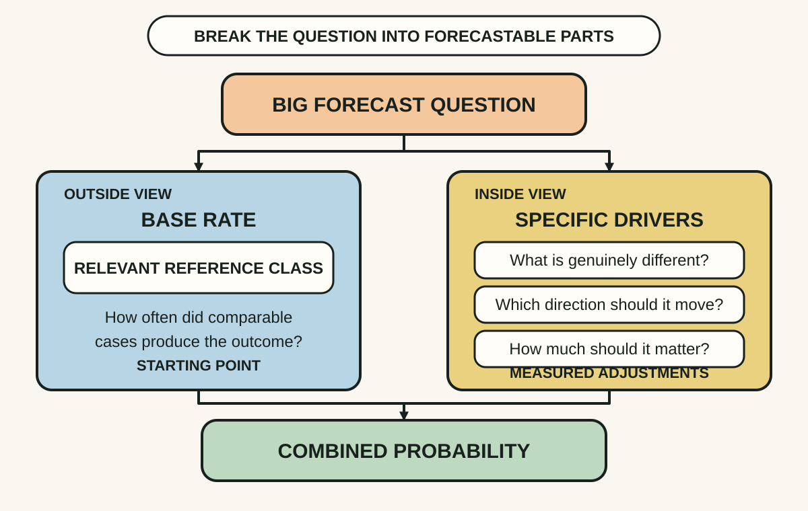
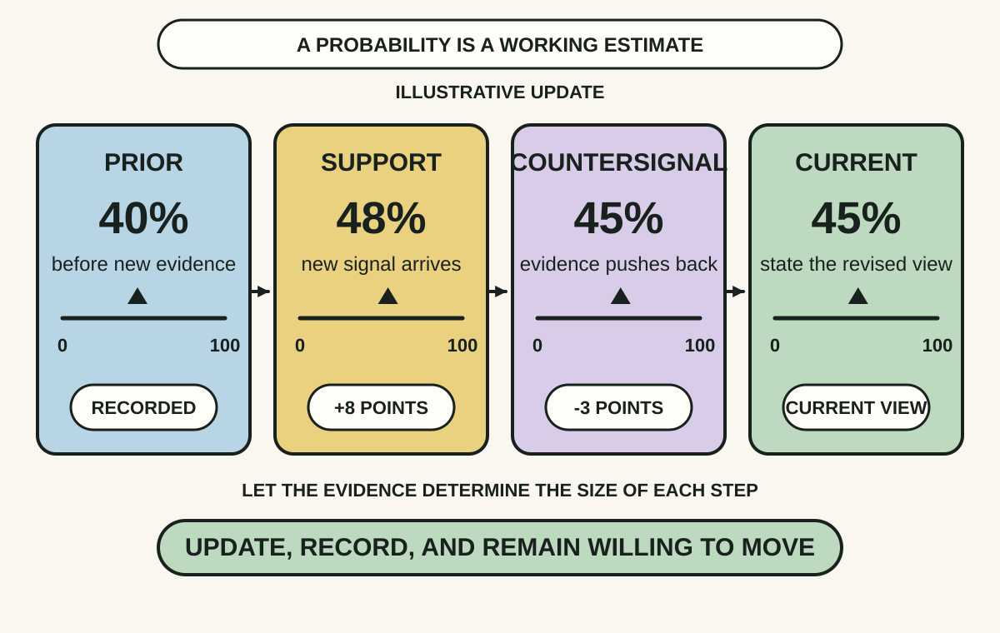
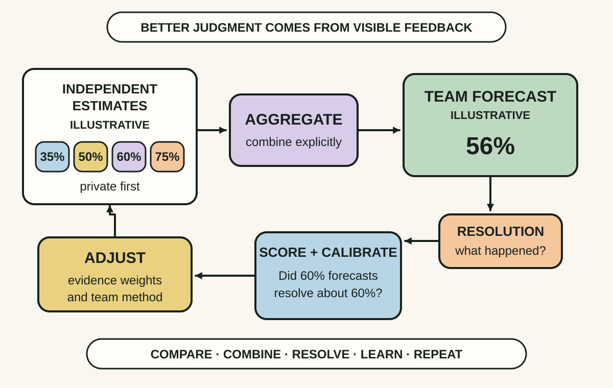

Daily lesson ·
Superforecasting
Make uncertain decisions more honest by starting with base rates, updating explicit probabilities as evidence changes and keeping score long enough to learn.
Idea 1
Build the forecast from the outside in #
The idea
Tetlock and Gardner advise forecasters to turn a vague question into a precise, resolvable one, then break it into tractable parts. Before becoming absorbed in the case, take the outside view: find a relevant reference class and ask how often comparable cases produced the outcome.
The base rate is a starting point, not the answer. Move inside only after the anchor is visible, then adjust for case-specific drivers and combine several perspectives. This makes the forecast's assumptions inspectable instead of letting one vivid story determine the probability.

Why it matters
Plans often feel unique from the inside. A reference class exposes ordinary failure rates, while decomposition reveals which assumptions actually carry the forecast.
Apply it today
Choose one meaningful yes-or-no question that will resolve within 30 days. Write the exact outcome, resolution date and source that will settle it.
Find a relevant class of comparable cases and note its rough base rate. Add two case-specific drivers, then state one probability that combines both views.
Caveat or failure mode
A poor reference class can create false confidence, and a changing environment can make historical rates stale. Novel or rare events may have no defensible base rate. State the gap rather than disguising it with an irrelevant comparison.
Idea 2
Treat probability as a revisable estimate #
The idea
Superforecasters use many grades of maybe. A number such as 60% makes confidence more precise than words such as likely, and it creates a record that can later be compared with what happened.
They also update. A forecast is a working hypothesis rather than an identity to defend. New evidence should move the probability by an amount that reflects how diagnostic and independent that evidence is, avoiding both stubborn underreaction and dramatic whiplash.

Why it matters
Explicit probabilities let a team distinguish a small shift from a reversal, connect decisions to thresholds and inspect whether confidence changes faster than evidence.
Apply it today
Write a probability for one current forecast and one sentence explaining its strongest evidence.
Name one signal that would move it up and one that would move it down. Give each signal a plausible point change before either arrives.
Caveat or failure mode
A precise number can still rest on weak evidence. Correlated reports may repeat the same signal, and rare events are slow to calibrate. Keep the probability separate from the action threshold: the same estimate can justify different decisions when consequences differ.
Idea 3
Score forecasts and combine independent views #
The idea
The Good Judgment Project made forecasting a repeatable learning system: questions had resolution rules, people submitted probabilities, updates were timestamped, outcomes were scored and multiple judgments were aggregated. Original studies reported gains from probability training, teaming and tracking high performers.
A 2025 reanalysis found that controlling for extraneous variables substantially reduced, removed or sometimes reversed estimated effects of training and teaming on latent ability. The safer conclusion is not that one intervention guarantees better judgment, but that transparent forecasts, independent evidence, aggregation and outcome feedback make performance open to testing and improvement.

Why it matters
Confident narratives can evade accountability. A scored history reveals overconfidence, domains of skill and recurring process errors, while independent estimates preserve evidence that a group discussion might suppress.
Apply it today
Before the next uncertain group decision, ask two or more people to write a probability and one reason privately.
Combine the estimates as a visible baseline, discuss the widest disagreement, record the final forecast and schedule the resolution review.
Caveat or failure mode
The tournament used motivated volunteers and bounded geopolitical questions. Selection, effort, updating frequency, knowledge and the environment interacted, so there is no single superforecaster trait or guaranteed team effect. Group discussion can also create herding unless initial views stay independent.
Knowledge check · 6 questions
Learning check
Answer all 6, then check your answers. Your first result stays in this browser, and each explanation appears after you check. A 3-question review can appear on the homepage from tomorrow.
6 questions not yet answered.
Today's experiment · 10 minutes
Make one forecast inspectable
- Choose one uncertain question that matters and will resolve within 30 days.
- Write an exact yes-or-no outcome, resolution date and source that will settle it.
- Choose a relevant reference class and write its rough base rate; if none is credible, state that gap.
- Add two case-specific drivers and assign one probability.
- Name one signal that would move the probability up and one that would move it down, then save the forecast where you can score it.
Observable result: You finish with a dated forecast that another person can understand, update and score after the outcome resolves.
Retrieval practice
Spaced recall
- From Working Effectively with Legacy Code: why can a characterization test expose change without proving the captured behaviour is correct?
Verification
Source notes
These links support the attributed claims and edition details; applications and extensions are labelled in the lesson.
- Penguin Random House: Superforecasting editions and book description
- IARPA: Aggregative Contingent Estimation program
- Psychological Science: Psychological Strategies for Winning a Geopolitical Forecasting Tournament
- Perspectives on Psychological Science: Identifying and Cultivating Superforecasters
- Management Science: Confidence Calibration in a Multiyear Geopolitical Forecasting Competition
- IARPA: Good Judgment Project public data release
- Psychological Science 2025: Rethinking the Role of Teams and Training in Geopolitical Forecasting
One-sentence takeaway